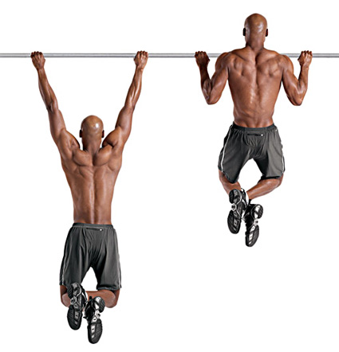

Vježbe snage – čučnjevi, benč i mrtva dizanja
Čučnjevi, benč i mrtva dizanja osnovne su vježbe za povećanje i mjerilo snage. To su vježbe u kojima se za podizanje tereta koriste mnoge skupine mišića, te je pravilno izvođenje vježbi od znatne važnosti kako bi se smanjila mogućnost povreda. Ove vježbe ne preporučuju se za rad početnicima ili onima koji su se tek oporavili od neke ozljede, jer su dosta naporne i ukoliko je forma nepravilna opasne.
Svaka od ovih 3 vježbi pogađa gotovo cijelo tijelo, ali najviše pogađaju određeni dio tijela. Čučnjevi najviše pogađaju noge, iako prilikom izvođenja vježbe rade i leđa i rame. Mrtva dizanja najviše pogađaju leđa, ali rade i mišići nogu i ruku, pa čak i ramena. Benč pogađa dosta mali broj mišića za razliku od čučnjeva i mrtvih dizanja, a najviše pogađa prsa i malo triceps. Također, postoji više varijanti izvođenja ovih vježbi.

Ove vježbe su dosta naporne, te se nepreporučuju mladim ljudima koji su još u razvoju. Također prilikom izvođenja mrtvih dizanja i čučnjeva preporučuje se nošenje pojasa kako bi se spriječile moguće povrede. Vrlo je važno pravilno izvoditi ove vježbe, te ukoliko podižete puno kila nepravilno, rađe smanjite kilažu, jer radite suprotan efekt.